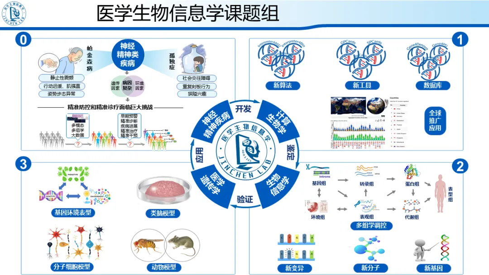

中南大学湘雅医院李津臣课题组诚聘生物信息学相关多学科交叉人才
原文：https://mp.weixin.qq.com/s?__biz=MzAwMzIzOTk5OQ==&mid=2247497293&idx=2&sn=288698b056c7e3d3f5c6b567c67c0f8a&chksm=9b3c8f1dac4b060b356fba6e8af09c5075eb4de8331e2fae6f37cd8941617920a801d1ae086a#rd 合集：求职/求学/招聘
本研究团队立足于帕金森病和孤独症为代表的神经精神类疾病，利用计算生物学、生物信息学和医学遗传学的方法探究疾病发生发展的本质规律及发病机制，为其精准防控和诊疗提供科学依据。在医见生信，您可以订阅我们团队已发表的代表性论文，以及我们开发的整合疾病表型数据与遗传信息的分析工具和数据库。此外，我们每周都会分享组会论文、生信技术或生信心得，您可以订阅任何您感兴趣的合集。本课题组长期招聘多学科交叉的助理研究员、技术员和博士后，招收生物医学背景的优秀本科生攻读硕士学位，欢迎您的加入~
1
招聘简介
1.1
招聘岗位
科研人员、技术员、博士后
1.2
招聘方向
生物信息学（1-2名）、遗传学或分子生物学或细胞生物学（1-2名）、计算机科学（1名）、流行病与卫生统计学（1名）等相关方向或相近方向。
1.3
研究方向
人类重大疾病特别是神经精神类疾病的医学遗传学与生物信息学研究。
1.4
入职待遇
中南大学湘雅医院正式职工待遇；如达到人才计划的标准，则享受相应待遇。
1.5
招聘时间
博士后长期有效，其他岗位招满为止。
1.6
联系邮箱
李老师 (lijinchen@csu.edu.cn)
1.7
团队优势
依托多个国家级、省部级平台，团队建立了多个专病样本库、数据库，拥有近 10000+例WES/WGS数据，1000+例多组学数据，300+例ONT、100+例HiFi三代测序数据。

2
科研人员
2.1
方向
| 方向 | 具体内容 |
|---|---|
| 生物信息学 | 多组学数据特别是基因组、表观基因组数据的分析与挖掘 |
计算生物学| 开发精准解读复杂疾病致病基因和变异的方法、工具及数据库
流行病与卫生统计学| 利用人群队列医学数据和基因组数据挖掘复杂疾病风险因素及基因环境交互作用
医学遗传学| 利用分子生物学、细胞生物学、动物模型研究相关基因与变异的致病机制
2.2
要求
1）博士研究生毕业或博士后出站；2）年龄原则上不超过32周岁（具有博士后经历者不超过35周岁），年龄计算截止至当年6月30日；3）以第一作者或通讯作者至少在领域内顶级专业期刊发表原创论著2篇；4）满足湘雅医院科研岗位的相关入职要求，达到一定的学术积分。
2.3
待遇
1）中南大学湘雅医院正式职工待遇及相关科研奖励，享受团队绩效奖励；2）按照单位政策享受相应的科研启动经费及安家费；按照学校及医院政策规定进行职称晋升。3）如达到医院人才计划标准，则享受相应待遇，具体面议。
3
技术人员
3.1
方向
1）生物信息学2）计算生物学3）流行病与卫生统计学4）医学遗传学
3.2
要求
1）博士研究生毕业；2）博士不超过32周岁，年龄计算截止至当年6月30日；3）以第一作者或通讯作者在领域内专业期刊发表原创论著1篇及以上；
3.3
待遇
1）中南大学湘雅医院正式职工待遇及相关科研奖励，享受团队绩效奖励；2）按照学校及医院政策规定进行中高级职称晋升；
4
博士后
4.1
方向
1）生物信息学2）计算生物学3）流行病与卫生统计学4）医学遗传学
4.2
要求
1）博士研究生毕业；2）博士不超过32周岁，年龄计算截止至当年6月30日；3）以第一作者或通讯作者在领域内专业期刊发表原创论著1篇及以上；
4.3
待遇
1）年薪20-40万，科研启动经费20-100万，具体面议；2）按照湘雅医院正式职工享受相关科研成果的科研奖励，享受团队绩效奖励；3）入职后表现特别优异者，根据科研业绩有机会聘为正式职工；
5
课题组PI介绍
李津臣教授，现任国家老年疾病临床医学研究中心(湘雅医院)数据挖掘与应用中心主任、中南大学湘雅医院生物信息中心常务副主任；国家重点研发计划（青年）首席科学家，湖南省优秀青年科学基金获得者；入选国家万人计划青年拔尖人才、中国科学技术协会青年人才托举工程、湖南省湖湘青年英才、湖南省青年岗位能手。
一直致力于以孤独症、帕金森病等神经精神类疾病的生物信息学与医学遗传学研究，组建了中南大学“医学生物信息学与神经精神疾病”研究团队 (http://genemed.tech/lilab)。带领团队开发了开发了一系列精准鉴定致病变异和候选基因的生物信息学分析方法和数据库，并逐步建立了特色鲜明的神经精神疾病多组学分析体系，服务于全球102个国家三千余科研单位，累积点击率超过200万人次；利用该体系从多个维度鉴定了神经精神疾病临床亚型和分子亚型之间的重要关系，揭示了神经精神疾病的多个关键基因、通路及功能网络，为疾病的亚型分类、精准防控与精准诊疗提供了重要的科学依据。
作为项目负责人获批国家重点研发计划（青年科学家项目）、国家自然科学基金面上项目等科研项目10项，获批经费总计近2000万元。以第一作者或通讯作者发表SCI研究论文30余篇（JCR1区26篇），其中IF>10的研究论文12篇；申请国家发明专利8项（已获授权4项），获批软件著作权16项，完成科研转化2项，转化经费502万元；兼任中国遗传学会行为遗传分会秘书长、中国生物信息学会重大疾病组学信息学专委会常委、湖南省遗传学会和湖南省神经科学学会理事、Genes客座主编、Frontier in Genetics和Frontier in Neurology杂志编委。
喜欢我们，别忘了关注我们，除了分享记录 JC Lab 活动之外，我们也会在之后多多分享干货~记得点 ⌈ 赞 ⌋ 和 ⌈ 在看 ⌋ 哦~
点击 ⌈ 阅读原文 ⌋ 访问课题组网站👇